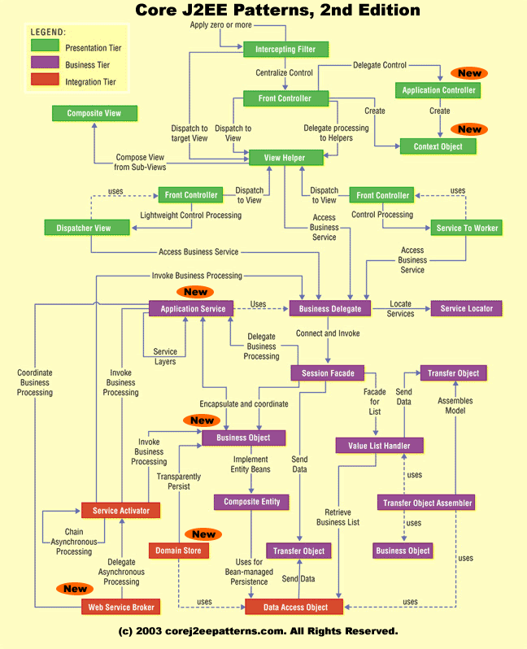

Introducción a MVC y a Struts
Hasta el momento hemos visto varios elementos y tecnologías que pueden combinarse para desarrollar una aplicación web: servlets, páginas JSP, JavaBeans, clases java convencionales... El objetivo de este tema es proponer una arquitectura para nuestras aplicaciones que combine todos estos elementos de manera modular.
Arquitecturas para aplicaciones web. Modelo-Vista-Controlador
Modelo de capas en una aplicación web
El código de una aplicación web típica puede dividirse en varios módulos o capas bien diferenciados. Por ejemplo pensemos en una tienda web en la que un usuario hace un pedido con los productos que actualmente tiene en el carro. Parte del código que procese este caso de uso se encargará de la interfaz de usuario (o presentación): mostrar el contenido del carro, permitir la introducción de la dirección de entrega y el medio de pago,... Otra parte se encargará de realizar el pedido en sí (o "lógica de negocio"): chequear que el producto está en stock, calcular el nº de días estimados para la entrega, comunicar con la aplicación de gestión de almacén para poner el pedido en cola,... Finalmente, todas estas operaciones tienen que registrarse de modo permanente, típicamente en una base de datos relacional (acceso a datos).
Evidentemente es conveniente separar en distintos módulos el código que implemente las operaciones de presentación, lógica de negocio y acceso a datos. Así se consigue una mayor modularidad y mantenibilidad, facilitando los cambios y las pruebas aisladas en cada módulo. Esto nos lleva a la idea de la división de las aplicaciones web en tres capas:
- Presentación: encapsula toda la lógica necesaria para presentar los datos en los clientes. Recibe las peticiones de estos y envía las respuestas. En esta capa se utilizan tecnologías como los servlets y las páginas JSP.
- Negocio: implementa los procesos que constituyen el núcleo de la aplicación. En la capa de negocio se emplean tecnologías como los JavaBeans, y en aplicaciones de tipo enterprise los EJBs.
- Integración o Acceso a datos: permite la comunicación con los sistemas donde se almacenan los datos. Típicamente emplea JDBC para acceso a bases de datos o JMS y conectores J2EE para acceder a sistemas no-java.
Al hablar de capas en lugar de módulos se hace hincapié en un principio básico que consiste en que cada capa se comunica únicamente con la que tiene inmediatamente arriba y abajo para reducir dependencias, y que el interfaz de comunicación entre capas debe aislar en lo posible del funcionamiento interno de las mismas.
La arquitectura Modelo-Vista-Controlador
Las especificaciones de JSP hablan de dos enfoques distintos a la hora de construir aplicaciones con esta tecnología: los denominados modelo 1 y modelo 2. En los dos enfoques se considera que la implementación de la lógica de negocio y el acceso a las fuentes de datos debe "sacarse fuera" de las páginas JSP y residir en JavaBeans. No obstante, ambos enfoques difieren en quién lleva a cabo el procesamiento de la petición HTTP: en el modelo 1 lo realizan los propios JSPs, mientras que en el modelo 2 hacen esta tarea los servlets. En la siguiente figura se muestra un esquema de un sistema que utiliza la arquitectura modelo 1.

El modelo 1 es apropiado solo para aplicaciones web pequeñas. Las páginas JSP deben ocuparse tanto de la presentación como de la navegación (en base a la petición HTTP decidir qué operación de lógica de negocio hay que ejecutar y cuál es el interfaz de usuario a mostrar). Esto hace que las aplicaciones grandes sean difíciles de mantener.
El modelo 2 va un paso más allá y separa las responsabilidades de control de las operaciones a ejecutar,implementación de las mismas y presentación de resultados. En la siguiente figura se muestra un esquema.

En este modelo los servlets son los responsables de decidir, en base a la petición HTTP, a qué beans llamar, y las páginas JSP se limitan a la presentación de los datos obtenidos a través de dichos beans. Esto elimina gran parte del código Java de las páginas JSP, lo que permite que se puedan dividir las tareas: los programadores Java implementan los servlets, mientras que los desarrolladores web se ocupan de los JSP, que tienen un mínimo de código Java o incluso ninguno si se utilizan beans y taglibs propias o JSTL
El modelo 2 es un ejemplo de lo que se denomina genéricamente arquitectura MVC (Modelo-Vista-Controlador). Esta arquitectura es originaria del lenguaje Smalltalk en los años 80 y se ha usado en muchos sistemas y lenguajes desde entonces.
Los componentes de una arquitectura MVC son:
- Modelo: tiene dos partes
-
- Estado: o sea, los datos. Los implementaremos mediante beans.
- Acciones: disparan la "lógica de negocio". Se suele utilizar una acción distinta por cada caso de uso de nuestra aplicación. En nuestro caso, para implementar las acciones y la lógica que hay tras ellas usaremos beans y clases Java auxiliares.
- Vista: es el interfaz de usuario, que muestra los datos del modelo. Para implementar las vistas, utilizaremos JSPs.
- Controlador: recibe las peticiones del usuario, desencadena las acciones adecuadas en el modelo y muestra la vista correspondiente. Nuestro controlador se implementará mediante un servlet.
Veremos con mucho más detalle la interacción entre todos estos componentes cuando hablemos de Struts.
En la descripción anterior de MVC el controlador es el que dispara la lógica de negocio a través de las acciones. Cabría otra posibilidad y es que el controlador despachara directamente a la vista apropiada y fuera la vista la que disparara la lógica de negocio. Para casos en los que dicha lógica sea sencilla, este también puede ser un modelo apropiado, si el código Java se encapsula en taglibs propias.
Como ya se ha comentado, MVC no sólo se usa en la web. Sin ir más lejos, la librería Swing de Java es un ejemplo de este enfoque.No obstante, Swing es un ejemplo de MVC mucho más "fino", ya que cualquier evento sobre la vista puede causar el disparo del controlador para realizar una acción (por ejemplo, marcar una casilla de verificación). En aplicaciones web, la mayoría de acciones sobre el interfaz de usuario no causan una nueva petición HTTP, con lo que los "eventos" son de "grano más grueso" que en una aplicación tradicional. La especificación de JavaServer Faces, que veremos en los temas 3 y 4, es un intento de (entre otras cosas) extender este modelo de "grano fino" a las aplicaciones web.
MVC en Struts
Struts es un framework para construir aplicaciones web Java basadas en la filosofía MVC. Aunque existen muchos frameworks MVC para desarrollo de aplicaciones J2EE, Struts es el más extendido, hasta el punto de convertirse en un estándar "de facto" en el mundo J2EE. En los últimos tiempos se empieza a extender un framework para desarrollo de interfaces web basados en componentes denominado JavaServer Faces (JSF). Este se solapa en algunos aspectos con Struts, ya que también implementa MVC (aunque de modo distinto). No obstante, aunque JSF tiene las "bendiciones" de Sun y de gran parte de la industria (lo cual indica que podría convertirse en el framework predominante en algunos años) por el momento Struts mantiene su presencia, con gran cantidad de entornos de desarrollo y herramientas que lo soportan.
Struts implementa de la siguiente forma cada uno de los componentes de la arquitectura MVC:
- El controlador es un servlet, de una clase proporcionada por Struts. Será necesario configurar la aplicación web (a través del fichero web.xml) para que las peticiones del usuario se redirijan siempre al servlet.
- El controlador despacha las peticiones del usuario a la clase adecuada para ejecutar la acción. En struts, las clases que ejecuten las acciones deben heredar de la clase Action.
- La vista se implementará normalmente mediante páginas JSP. Struts ofrece dos herramientas para ayudar en la presentación de datos: los ActionForms son clases que capturan los datos introducidos en formularios y permiten su validación. Las librerías de etiquetas permiten mostrar errores y facilitar el trabajo con formularios.
- La implementación del modelo corre enteramente a cargo del desarrollador, ya que es propio de la capa de negocio y no está dentro del ámbito de Struts.
En este primer tema de los dos dedicados a MVC y Struts trataremos la parte del controlador y las acciones. En el tema 2 trataremos de la vista.
El ciclo que se sigue cuando Struts procesa una petición HTTP aparece en la siguiente figura

- El cliente realiza la petición, que recibe el controlador de Struts. Todas las peticiones pasan por él, ya que la petición no es una URL física (no es un servlet o un JSP) sino que es un nombre simbólico para una acción.
- El controlador despacha la petición, identificando la acción y disparando la lógica de negocio apropiada.
- La lógica de negocio actualiza el modelo y obtiene datos del mismo, almacenándolos en beans.
- En función del valor devuelto por la lógica de negocio, el controlador elige la siguiente vista a mostrar.
- La vista toma los datos obtenidos por la lógica de negocio.
- La vista muestra los datos en el cliente
El controlador de Struts
La instalación de Struts es sencilla. Basta con colocar en la carpeta WEB-INF/lib de nuestra aplicación web las librerías (ficheros .jar) que vienen con la distribución estándar de Struts. Si utilizamos alguna de las etiquetas propias de Struts (ver tema 2), necesitaremos incluir también el correspondiente descriptor (fichero .tld).
Como se ha comentado, el controlador en Struts es un servlet que recibe las peticiones del usuario y las redirige a las clases Java que las van a tratar. Salvo que tengamos necesidades muy especiales, podemos usar como controlador directamente la clase org.apache.struts.action.ActionServlet, que ya viene implementada en la distribución de Struts. Para que todas las peticiones del usuario se redirijan a este servlet habrá que modificar el fichero web.xml, como en el siguiente ejemplo
<!-- servlet que hace de controlador --> <servlet> <servlet-name>controlador</servlet-name> <servlet-class>org.apache.struts.action.ActionServlet</servlet-class> </servlet> <!-- redirigir ciertas peticiones al controlador --> <servlet-mapping> <servlet-name>controlador</servlet-name> <url-pattern>*.do</url-pattern> </servlet-mapping>
En el ejemplo anterior, todas las peticiones que sigan el patrón *.do se redirigirán al controlador de Struts. Por ejemplo la petición login.do será capturada por Struts y redirigida a la acción de nombre login.
Acciones en Struts
Las acciones son clases Java, uno de cuyos métodos se ejecutará en respuesta a una petición HTTP del cliente. Hay que asociar las peticiones con las acciones que dispararán e implementar la lógica de negocio dentro de las acciones.
Asociar el controlador a las acciones
Una vez el controlador recibe la petición debe despacharla a las clases Java que implementan la lógica de negocio.La asociación entre el nombre simbólico de la acción y la clase Java que la procesa se realiza en el fichero de configuración struts-config.xml (que se colocará en /WEB-INF). A lo largo de estos dos temas iremos viendo los distintos elementos de este fichero de configuración.
El mapeado entre acciones y clases se realiza dentro del elemento <action-mappings> y cada uno de ellos constituye un <action>. Por ejemplo, supongamos que la encargada de procesar la acción login en el ejemplo anterior es nuestra clase Java acciones.AccionLogin. El fichero struts-config.xml quedaría:
<?xml version = "1.0" encoding = "ISO-8859-1"?>
<!DOCTYPE struts-config PUBLIC "-//Apache Software Foundation//DTD Struts
Configuration 1.1//EN" "http://jakarta.apache.org/struts/dtds/struts-config_1_1.dtd">
<struts-config>
<!--definición de otros elementos del fichero de configuración -->
...
...
<!--definición de acciones -->
<action-mappings>
<!-- hacer login -->
<action path="/login" type="acciones.AccionLogin">
<forward name="OK" path="/personal.jsp"/>
<forward name="errorUsuario" path="/error.html"/>
</action>
<!-- definición de otras acciones -->
...
</action-mappings>
</struts-config>
Como se ve en el ejemplo, los atributos básicos de un action son su path (la URL que la identifica, sin el elemento común a todas las acciones - en nuestro caso sin el .do -) y la clase Java que la procesa (type). Así, cuando el cliente haga una petición login.do la acción ejecutada será una instancia de la clase acciones.AccionLogin.
Una vez terminada la lógica de negocio, el controlador debe elegir la siguiente vista a mostrar. Esto se hace en función del resultado devuelto por la acción. Una acción ejecutada puede tener diversos resultados (por ejemplo, un login puede ser correcto o no, dependiendo de la contraseña). Cada uno de ellos se especifica mediante un elemento <forward>, en el que se define un nombre simbólico para el resultado de la acción (name) y la URL de la página que contiene la vista asociada (path).
Implementar las acciones
Las clases encargadas de ejecutar las acciones deben descender de la clase abstracta org.apache.struts.action.Action,proporcionada por Struts. Cuando se ejecuta una acción lo que hace Struts es llamar a su método execute, que debemos sobreescribir para que realice la tarea deseada. Por ejemplo, para el caso de la acción login:
package acciones;
import javax.servlet.http.*;
import org.apache.struts.action.*;
public class AccionLogin extends Action
public ActionForward execute(ActionMapping mapping,
ActionForm form,
HttpServletRequest request,
HttpServletResponse response)
throws Exception {
boolean usuarioOK;
//obtener login y password y autentificar al usuario
//si es correcto, poner usuarioOK a 'true'
...
//dirigirnos a la vista adecuada según el resultado
if (usuarioOK)
return mapping.findForward("OK");
else
return mapping.findForward("errorUsuario");
}
}
Hay que destacar varias cosas del código de la acción:
- Como se ha dicho, una acción debe heredar de la clase Action
- El método execute recibe como parámetros la petición y la respuesta HTTP, lo que nos permite interactuar con ellas. No obstante, también tenemos accesibles los datos incluidos en la petición (normalmente a través de formularios) mediante el objeto ActionForm, si es que hemos asociado un objeto de esta clase a la acción. El uso de ActionForm lo trataremos en el tema 2.
- El método execute debe devolver un objeto de la clase ActionForward, que especifica la siguiente vista a mostrar.
- Normalmente la vista se especifica mediante un nombre simbólico, que se corresponderá con el name especificado en la etiqueta forward de struts-config.xml. El parámetro de tipo ActionMapping nos permite acceder a la asociación entre nombre de acción y clase que la implementa definida en el fichero. Así, su método findForward hace posible encontrar la vista asociada a un nombre simbólico.
Acciones por defecto
Struts incorpora una serie de acciones con comportamientos predefinidos, que son de uso común en muchas aplicaciones. Por ejemplo, para dirigir al usuario desde la página de login hacia la de registro de nuevo usuario, podríamos en principio utilizar simplemente un enlace, pero esto iría "contra la filosofía" de MVC, en la que todas las peticiones pasan por el controlador. En su lugar, podemos utilizar una acción de la clase org.apache.struts.action.ForwardAction, que redirige una petición hacia una vista, especificada mediante el atributo parameter. Por ejemplo:
<action path="/inicioRegistro" type="org.apache.struts.actions.ForwardAction"
parameter="/registro.jsp">
</action>
De esta manera, la petición a la URL inicioRegistro.do, se redigiría a la página registro.jsp. Así se puede cambiar el flujo de navegación sin tener que cambiar directamente los enlaces de las páginas.
Tratamiento de errores en las acciones
La ejecución de la acción puede generar uno o varios errores que deseamos mostrar al usuario. En Struts, el tratamiento de errores requiere una serie de acciones:
- Crear una lista de errores vacía. Esta lista se modela con el objeto ActionErrors.
- Añadir errores a la lista. Cada error es un objeto ActionError.
- Finalmente, si la lista contiene algún error
- Guardar la lista en la petición HTTP para que no se pierda. Para ello se utiliza el método saveErrors.
- Devolver un resultado que indique que se ha producido un error.
Por ejemplo, el siguiente código realiza los pasos antes descritos:
//crear una lista de errores vacía
ActionErrors errores = new ActionErrors();
try {
//código que ejecuta la lógica de negocio.
...
}
catch(Exception e) {
//añadir errores a la lista
errores.add(ActionErrors.GLOBAL_ERROR,
new ActionError("error.bd");
}
//comprobar si la lista de errores está vacía
if (!errores.empty()) {
//guardar los errores en la petición HTTP
saveErrors(request, errors);
//devolver un resultado que indique error. En struts-config.xml
//estará definida la página jsp asociada a este resultado
return mapping.findForward("error");
}
El constructor de un ActionError requiere como mínimo un argumento: el mensaje de error. Los mensajes de error no son directamente cadenas, sino claves dentro de un fichero de texto del tipo properties. Por ejemplo, la clave "error.bd" significará que debe haber un fichero .properties en el que se especifique algo como:
error.bd = se ha producido un error con la base de datos
Para indicar a struts cómo encontrar el fichero .properties, utilizamos el fichero de configuración struts-config.xml, mediante el elemento <message-resources> (que se pone detrás de la etiqueta <action-mappings>). Por ejemplo:
<message-resources parameter="util.recursos"/>
Indicaría a struts que busque un fichero recursos.properties dentro de la carpeta util. Normalmente, se toma como base de la búsqueda la carpeta /WEB_INF/classes, por lo que el fichero buscado será finalmente/WEB-INF/classes/util/recursos.properties.
Las claves de error pueden utilizar hasta 4 parámetros. Por ejemplo supongamos que se desea mostrar un error indicando que hay un campo requerido para el que el usuario no ha introducido valor. Sería demasiado tedioso hacer un mensaje distinto para cada campo: ("login requerido", "password requerido", etc). Es más fácil definir un mensaje con parámetros:
error.requerido = Es necesario especificar un valor para el campo {0}
Como se ve, los parámetros son simplemente números entre {}. El constructor de la clase ActionError permite especificar los parámetros (como se ha dicho, hasta 4) además de la clave de error
ActionError error = new ActionError("error.requerido", "login");
Como se ha visto en el ejemplo anterior, para añadir los errores a la lista se emplea el método add de la clase ActionErrors. Este método admite como primer parámetro una cadena que indica el tipo de error (lo más típico es usar la constante ActionErrors.GLOBAL_ERROR) y como segundo parámetro el propio objeto ActionError. Si en el tipo de error utilizamos el nombre de una propiedad de un bean, quedará asociado a esta y podremos mostrarlo específicamente en la página HTML (como veremos en las taglibs de Struts).
errors.add("password", new ActionError("error.passwordcorto"));
Para mostrar la lista de errores en la vista, se puede usar una etiqueta de las taglibs que vienen con Struts: la etiqueta <html:errors/>. Dicha etiqueta se sustituye en tiempo de ejecución por una lista no numerada (<ul>) en color rojo con los errores guardados desde la acción. Como dicha etiqueta pertenece a la taglib HTML de Struts es necesario importarla poniendo al principio del JSP:
<%@taglib uri="http://jakarta.apache.org/struts/tags-html" prefix="html" %>
Veremos con más detalle otras etiquetas de las taglibs de Struts en el tema siguiente.
Seguridad
La versión 1.1 de Struts introdujo la seguridad basada en acciones. Esto quiere decir que podemos combinar los mecanismos estándar de seguridad en aplicaciones web J2EE con el funcionamiento de nuestra aplicación Struts. Para cada acción especificaremos qué rol o roles pueden ejecutarla, mediante el atributo roles, por ejemplo en struts-config.xml podría aparecer algo similar a lo siguiente:
<action roles="admin,manager"
path="/admin/borrarUsuario"
...
</action>